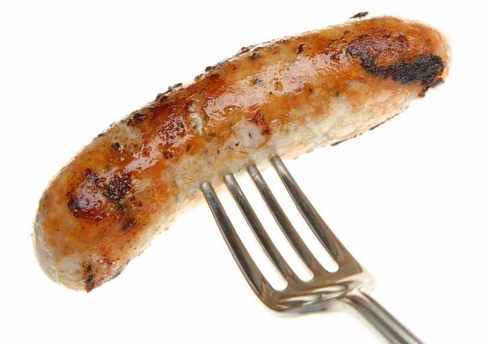

How
A party where the amount of invited males heavily out weighs the females. Often can be associated with Fraternities and sports bars.Also can be a party where the phenomenal food sausage is celebrated.
How to Sausage PartyA party where the amount of invited males heavily out weighs the females. Often can be associated with Fraternities and sports bars.Also can be a party where the phenomenal food sausage is celebrated.
How to Sausage PartyEnjoy over twenty kinds of sausage from all over the world. Made by local artisans.There may be vegetarian and gluten-free options. Party starts February 24th and 25th 2017.
What's a Sausage PartySausages were nicknamed bangers during the Second World War. Their high water content, meant that they were liable to explode when cooked as the water turned to steam, hence banger.
Facts about Sausage